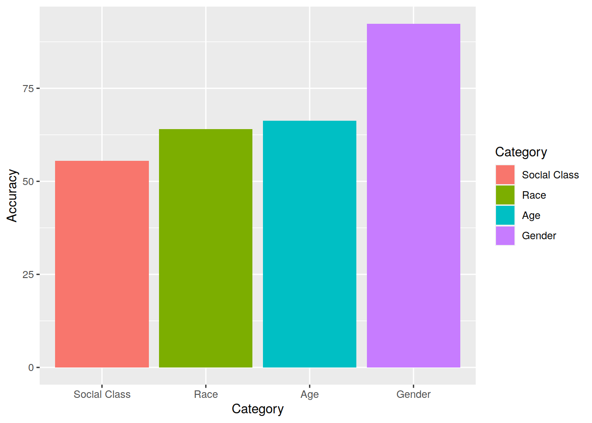
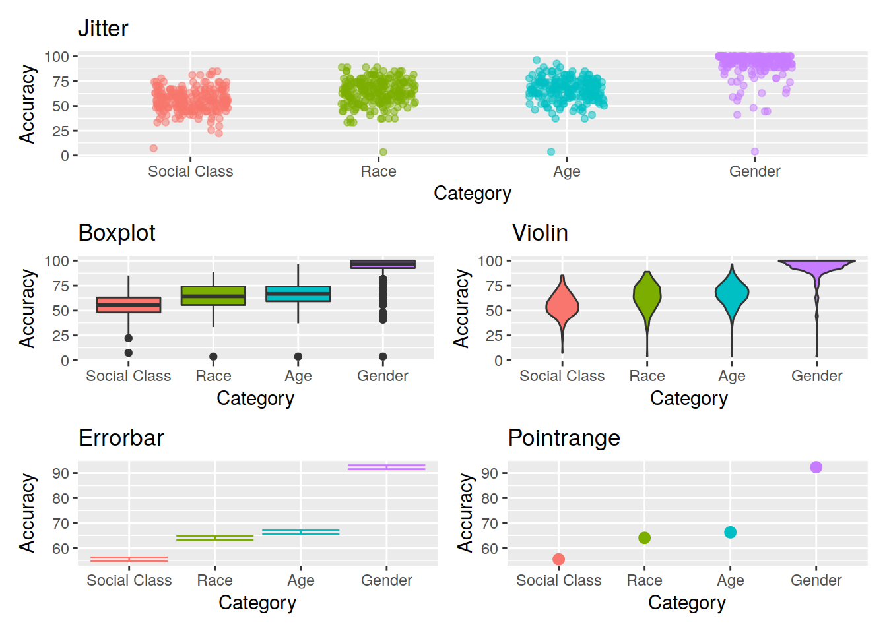

1.1 Data Visualization with ggplot
For plotting, you may be familiar with the popular ggplot2 package from some of the USMR labs last semester. We’re going to be using this more and more, so the first part of today’s lab will focus on ggplot.
Visualization is the first step in analysis
1.1.1 Geoms
To learn about some of the different functionalities of ggplot, we’re first going to need some data…

Task: Load the ggplot2 package, read in the data using load() and url() from https://edin.ac/2Erg9ZW and extract some summary statistics.
Data overview
Kraus et al. (2019) Evidence for the reproduction of social class in brief speech, Proc. Natl. Acad. Sci. U.S.A. (Study 1)
- N=189 speakers from the International Dialects of (North American) English Archive. Narrative speech and reading stories.
- Extracted 7 individual words that were produced by all speakers: “And”, “From”, “Thought”, “Beautiful”, “Imagine”, “Yellow”, and “The”.
- Participants (N=229, from AMT)
- Listened to the 7 one-word clips
- Estimated the speaker’s race, gender, age, and educational attainment
- Each participant completed this for a random subset of 27 speakers
Task: Make a summary plot showing mean accuracy for each category of judgment
hint: try ?stat_summary

Task: Explore the different ways of showing variability. Construct a plot using each of the following geoms:

Task: Combine two of the geoms used above to create a visualization of the mean accuracy, a measure of variability, and all of the data points.
Task: Refine the plot by, for example, removing unnecessary elements, adding useful annotations (e.g., chance performance = 50%), selecting a good color scheme, etc.
tip: This is where google becomes really helpful, for example
1.1.2 Recreating a plot
Task: Pick one of the graphs below, and recreate it using ggplot (if you like, try to make it better!).
Option A

Women in computer science
The data (in .csv format) can be downloaded from https://edin.ac/2qYA0wr. You can use read.csv(url("https://edin.ac/2qYA0wr")) to read it directly into R.